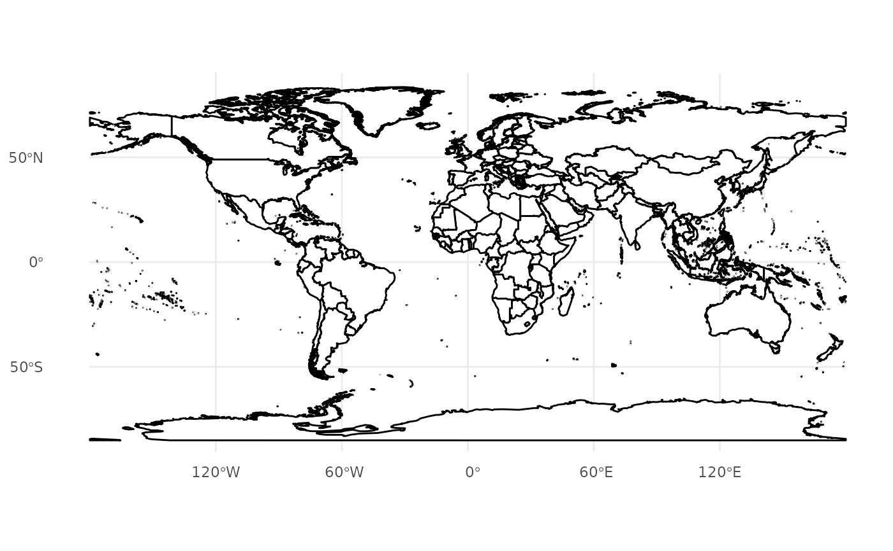
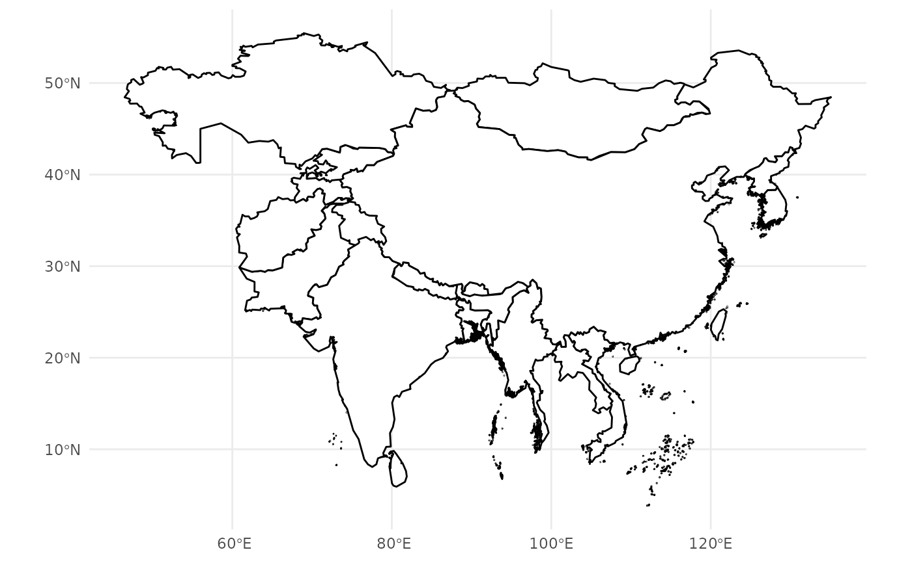
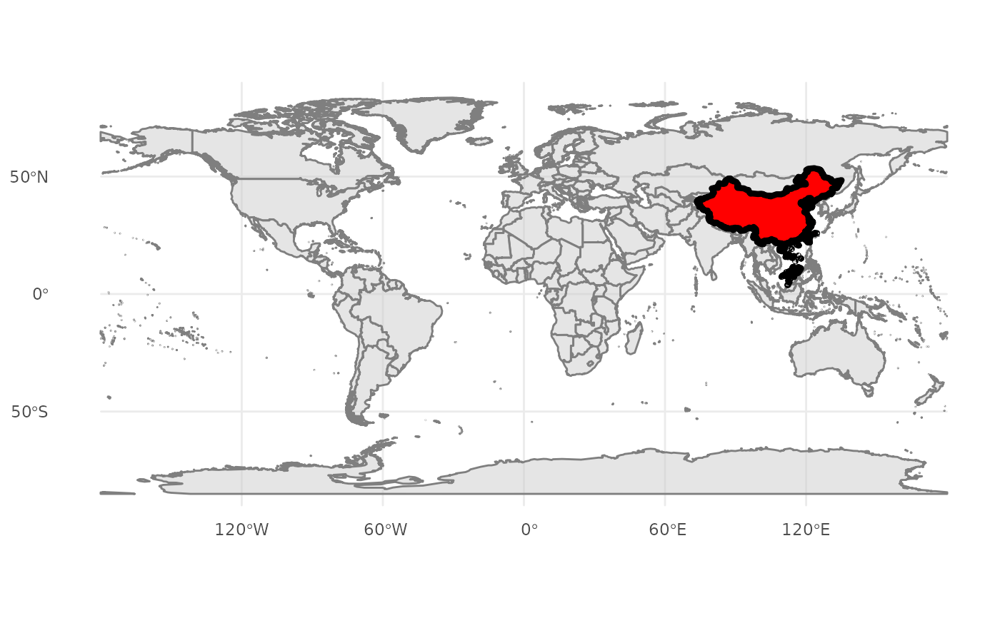
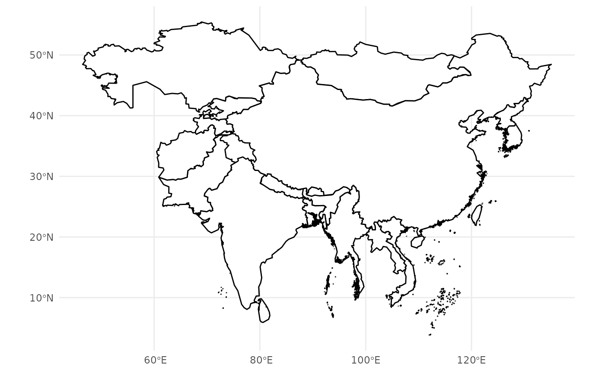
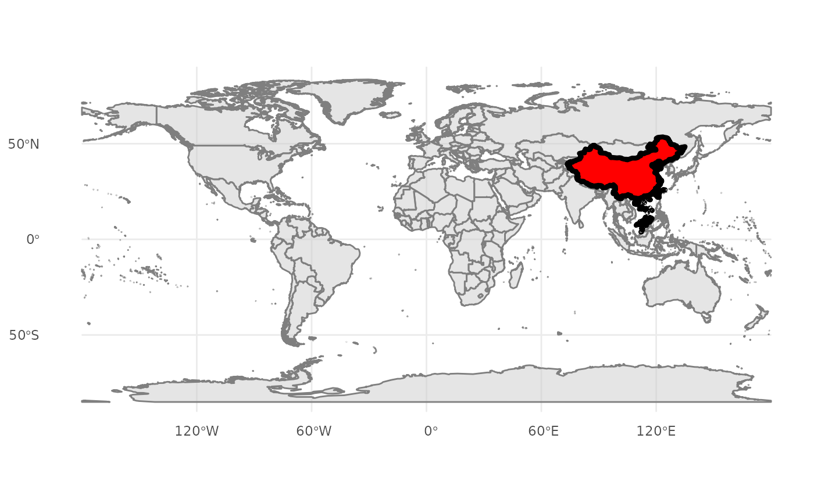

geom_world is a wrapper around ggplot2::geom_sf() designed
for visualizing world maps with added flexibility. It allows custom projections,
filtering specific countries or regions, and detailed aesthetic customizations for borders and fills.
Usage
geom_world(
data = NULL,
crs = "+proj=longlat +datum=WGS84",
color = "black",
fill = "white",
linewidth = 0.5,
filter_attribute = "SOC",
filter = NULL,
...
)Arguments
- data
An
sfobject containing world map data. IfNULL, the function loads the package's defaultworld.geojsondataset.- crs
A character string. The target coordinate reference system (CRS) for the map projection. Defaults to
"+proj=longlat +datum=WGS84".- color
A character string specifying the border color for administrative boundaries. Default is
"black".- fill
A character string specifying the fill color for administrative areas. Default is
"white".- linewidth
A numeric value specifying the line width for administrative boundaries. Default is
0.5.- filter_attribute
A character string specifying the column name to use for filtering countries or regions. Default is
"SOC", which refers to the ISO 3166-1 alpha-3 country code in the default dataset.- filter
A character vector specifying the values to filter specific countries or regions. Default is
NULL.- ...
Additional parameters passed to
ggplot2::geom_sf(), such assize,alpha, orlty.
Details
geom_world simplifies the process of creating world maps by combining the functionality of geom_sf
with user-friendly options for projections, filtering, and custom styling.
Key features include:
Custom projections: Easily apply any CRS to the map.
Filtering by attributes: Quickly focus on specific countries or regions.
Flexible aesthetics: Customize fill, borders, transparency, and other visual properties.
Examples
# Plot the default world map
ggplot() +
geom_world() +
theme_minimal()

# Apply Mercator projection
ggplot() +
geom_world(crs = "+proj=merc") +
theme_minimal()
 # Filter specific countries (e.g., China and its neighbors)
china_neighbors <- c("CHN", "AFG", "BTN", "MMR", "LAO", "NPL", "PRK", "KOR",
"KAZ", "KGZ", "MNG", "IND", "BGD", "TJK", "PAK", "LKA", "VNM")
ggplot() +
geom_world(filter = china_neighbors) +
theme_minimal()

# Background map + Highlight specific region
ggplot() +
geom_world(fill = "gray80", color = "gray50", alpha = 0.5) +
geom_world(filter = c("CHN"), fill = "red", color = "black", linewidth = 1.5) +
theme_minimal()

# Customize styles with transparency and bold borders
ggplot() +
geom_world(fill = "lightblue", color = "darkblue", linewidth = 1, alpha = 0.8) +
theme_void()
# Filter specific countries (e.g., China and its neighbors)
china_neighbors <- c("CHN", "AFG", "BTN", "MMR", "LAO", "NPL", "PRK", "KOR",
"KAZ", "KGZ", "MNG", "IND", "BGD", "TJK", "PAK", "LKA", "VNM")
ggplot() +
geom_world(filter = china_neighbors) +
theme_minimal()

# Background map + Highlight specific region
ggplot() +
geom_world(fill = "gray80", color = "gray50", alpha = 0.5) +
geom_world(filter = c("CHN"), fill = "red", color = "black", linewidth = 1.5) +
theme_minimal()

# Customize styles with transparency and bold borders
ggplot() +
geom_world(fill = "lightblue", color = "darkblue", linewidth = 1, alpha = 0.8) +
theme_void()